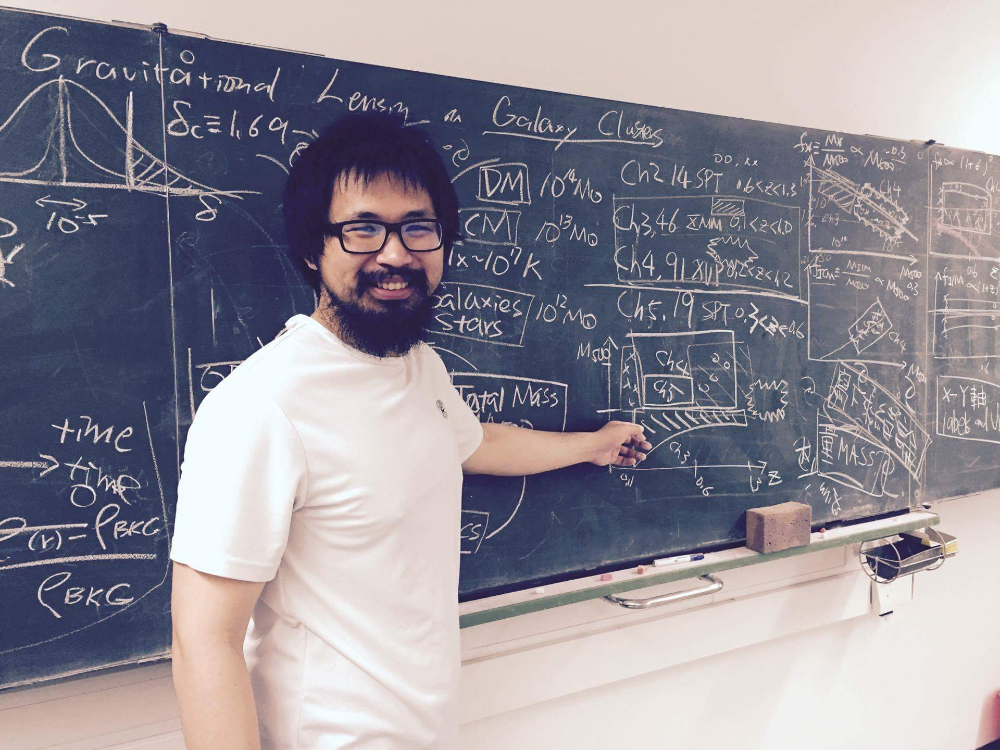

I-Non Chiu
Prize Postdoctoral Fellow at Tsung-Dao Lee Institute (TDLI), Shanghai
Hello, I am an astrophysicist and cosmologist from Taiwan. My Chinese name is 邱奕儂. I was born and raised in Taipei, Taiwan. Welcome to my personal webpage.
I am currently an independent postdoc at the Tsung-Dao Lee Institute (TDLI) in Shanghai, China. Before that, I was a postdoc working with Prof. Keiichi Umetsu and Teppei Okumura in Academia Sinica Institute of Astronomy and Astrophysics (ASIAA) during 2016 and 2020. Before that, I was studying my PhD under the supervision of Prof. Dr. Joseph Mohr in Ludwig Maximilians University (LMU) in Munich from 2012 to 2016. Before moving to Munich, I studied my Master Degree in National Taiwan University (NTU) and ASIAA working with Dr. Sandor Molnar and Prof. Pisin Chen.
You can find out my publications in here and CV in here.
You can reach me through inchiu__AT__sjtu.edu.cn
